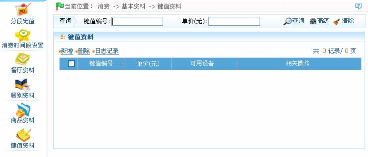

IC--8.2.6 键值资料
点击【消费】 【基本资料】
【基本资料】 【键值资料】，进入如下出所示的键值资料页面：
【键值资料】，进入如下出所示的键值资料页面：

该页面的操作主要包括键值资料的新增、删除、查询。
-
 新增键值资料
新增键值资料
 提示：（1）、操作前，请仔细查看页面中的操作提示；（2）、单击页面上的【日志记录】按钮，可以查看对应的操作日记记录。
提示：（1）、操作前，请仔细查看页面中的操作提示；（2）、单击页面上的【日志记录】按钮，可以查看对应的操作日记记录。
1、单击键值资料页面上的【新增】按钮，进入新增键值资料页面：

根据需要设置各参数，具体设置方法如下：
键值编号：输入键值编号（不可重复），可单击【验证】按钮，验证输入的编号是否重复。
单价：输入该键值对应的消费金额。
可用设备：单击按钮，在弹出的设备下拉框中选择可用设备（可不选）。
2、设置完成后，单击【确定】按钮保存，并返回键值资料页面；此时键值资料列表中将显示刚新增的键值资料。
（1）、新增键值资料后，系统会自动生成一条命令。若设备已联接到系统中，则直接接收该命令，然后以系统中的键值资料为准，同步设备与系统中的键值资料；若设备尚未联接到系统，则待其联接到系统后，会实时获取命令，并执行该命令，然后同步该键值资料。
（2）、注意：该命令只作用于消费模式为“键值模式”的消费设备。若未选择“可用设备”，则命令将作用于系统中的所有消费模式为“键值模式”的设备；若选择了“可用设备”，则该命令仅作用于被选中的设备；同时只有被选中的消费设备才可使用该键值资料，系统中其他消费设备将无法使用该键值资料。
（3）、用户可根据单击键值资料所在行的“相关操作”下对应的【编辑】或【删除】按钮，进入对应的编辑或删除键值资料页面，然后进行编辑或删除键值资料操作。具体操作方法，同编辑或删除餐厅资料一致。